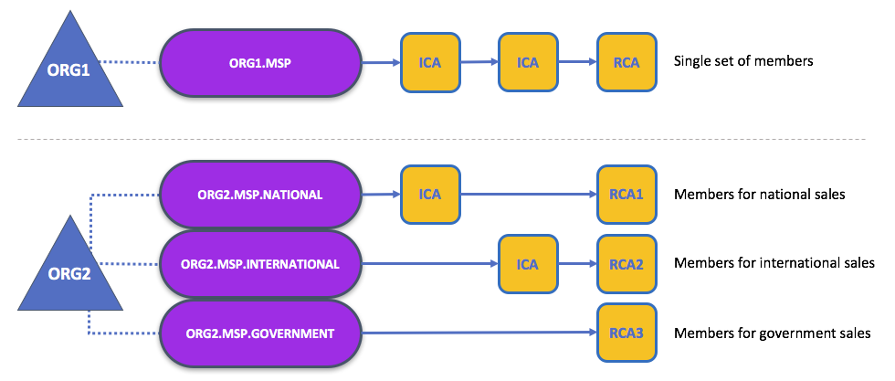
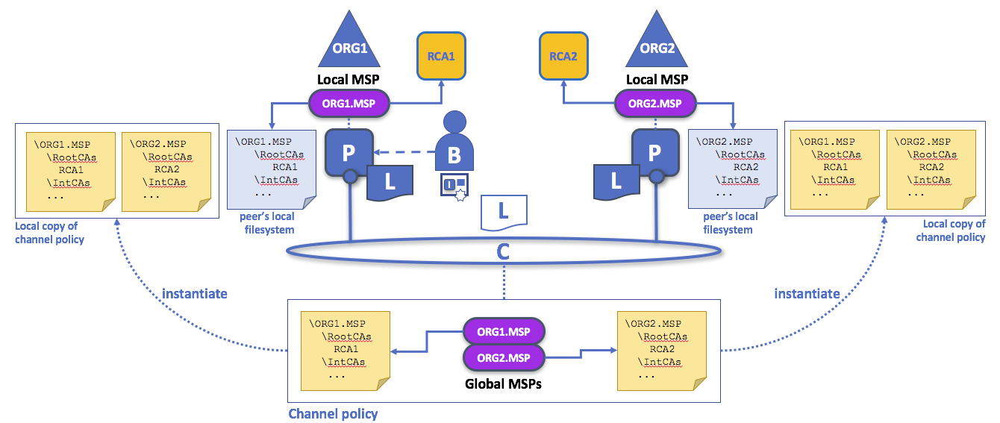

Membership¶
如果您已经阅读了关于身份的文档，那么您已经看到PKI如何通过信任链提供可验证的身份。现在让我们看看如何使用这些标识来表示区块链网络的可信成员。
这就是成员服务提供者(MSP)发挥作用——它标识所信任的根CA和中间CA定义信任域的成员,例如,一个组织,要么通过列出其成员的身份，要么通过标识出哪些CA授权为他们的成员发行有效身份，或者——通常会是这样的——通过两者的结合。
MSP的强大功能不仅仅是列出谁是网络参与者或通道的成员。MSP在它代表的组织范围内确定参与者可以扮演的特定角色(如管理员,或作为子组织的成员组),并在网络上下文和通道中设置访问权限的基础(如通道管理员、读者、作家)。
组织MSP的配置将以通道MSP的形式通知相应组织成员所参与的所有通道。除了通道MSP，节点、排序器和客户端还维护一个本地MSP，以便在通道上下文之外对成员消息进行身份验证，并定义特定组件上的权限（例如谁有能力在peer上安装链码）。
此外，MSP还允许标识已被撤销的身份列表（如身份文档中所讨论的），但是我们将讨论该过程如何扩展到MSP。
稍后我们将更多地讨论本地和通道MSP。现在，让我们看看MSP通常做什么。
Mapping MSPs to Organizations¶
组织是一组受管理的成员。可以是像跨国公司这样的大公司，也可以是像花店这样的小公司。关于组织(或orgs)，最重要的是他们在一个MSP下管理他们的成员。注意，这与我们稍后将讨论的X.509证书中定义的组织概念不同。
组织及其MSP之间的排他性关系使得以组织的名称命名MSP是明智的，您会发现在大多数策略配置中都采用了这种约定。例如，组织ORG1可能有一个名为ORG1-MSP之类的MSP。在某些情况下，组织可能需要多个成员组——例如，通道用于在组织之间执行非常不同的业务功能。在这些情况下，有多个MSP并相应地命名是有意义的，例如，ORG2-MSP-NATIONAL和ORG2-MSP-GOVERNMENT，这反映了与政府监管通道相比，ORG2在全国销售渠道中的成员信任根是不同的。
MSP1
一个组织有两种不同的MSP配置。第一个配置显示了MSP和组织之间的典型关系——单个MSP定义了组织的成员列表。在第二种配置中，不同的MSP用于表示具有国家、国际和政府关联的不同组织组。
Organizational Units and MSPs¶
一个组织通常被划分为多个组织单元(OU)，每个单元都有一组特定的职责。例如，ORG1组织可能同时具有ORG1-MANUFACTURING 和ORG1-DISTRIBUTION OU来反映这些独立的业务线。当CA发出X.509证书时，证书中的OU字段指定身份所属的业务线。
稍后我们将看到，OU怎样帮助控制组织中被认为是区块链网络成员的部分。例如，只有来自ORG1-MANUFACTURING OU的身份才能访问通道，而ORG1-DISTRIBUTION不能。
最后，尽管这是对OU的轻微滥用，但有时它们可以被联盟中的不同组织用来区分彼此。在这种情况下，不同的组织使用相同的根CA和中间CA作为它们的信任链，但是分配OU字段来标识每个组织的成员。稍后我们还将看到如何配置MSP来实现这一点。
Local and Channel MSPs¶
在区块链网络中，MSP出现在两个位置:通道配置(通道MSP)和在参与者的前提下的本地位置(本地MSP)。本地MSP是为客户端(用户)和node节点(peer和排序器)定义的。节点本地MSP为该节点定义权限(例如，peer管理员是谁)。用户的本地MSP允许用户端在其交易中作为通道的成员(例如在链码交易中)或作为系统中特定角色的所有者(例如在配置交易中的某组织管理员)对自己进行身份验证。
每个节点和用户都必须定义一个本地MSP，因为它定义了谁拥有该级别的管理或参与权(peer管理员不一定是通道管理员，反之亦然)。
相反，通道MSPs在通道级别定义管理和参与权。每个参与通道的组织都必须为其定义一个MSP。通道上的peer和排序器将共享通道MSPs的相同视图，因此能够正确地对通道参与者进行身份验证。这意味着，如果组织希望加入通道，则需要在通道配置中包含一个包含组织成员信任链的MSP。否则，来自这个组织身份的交易将被拒绝。
本地和通道MSPs之间的关键区别不在于它们如何工作——它们都将身份转换为角色——而在于它们的作用域。
MSP2
本地和通道MSPs。每个peer的信任域(例如组织)由peer的本地MSP(例如ORG1或ORG2)定义。通过将组织的MSP添加到通道配置中，可以表示组织加入了通道。例如，此图中的通道由ORG1和ORG2管理。类似的原则也适用于网络、排序器和用户，但是为了简单起见，这里没有显示这些原则。
通过查看区块链管理员安装和实例化智能合约时发生的情况，您可能会发现了解如何使用本地和通道MSPs很有帮助，如上图所示。
管理员B使用RCA1颁发的身份连接到peer，并将其存储在本地MSP中。当B试图在peer上安装智能合约时，peer检查其本地MSP ORG1-MSP，以验证B的身份确实是ORG1的成员。成功的验证将允许安装命令成功完成。随后，B希望在通道上实例化智能合约。因为这是一个通道操作，所以通道上的所有组织都必须同意它。因此，peer必须在成功提交此命令之前检查通道的MSPs。(其他事情也必须发生，但现在先集中精力做上面的事情。)
本地MSPs只在它们应用到的节点或用户的文件系统上的定义。因此，在物理和逻辑上，每个节点或用户只有一个本地MSP。但是，由于通道MSPs对通道中的所有节点都可用，所以它们在通道配置中逻辑上定义一次。然而，通道MSP也在通道中每个节点的文件系统上实例化，并通过协商一致保持同步。因此，虽然每个节点的本地文件系统上都有每个通道MSP的副本，但从逻辑上讲，通道MSP驻留在通道或网络上并由通道或网络维护。
MSP Levels¶
通道和本地MSPs之间的分离反映了组织管理其本地资源(如peer节点或排序器节点)和通道资源(如账本、智能合约和联盟)的需求，这些资源在通道或网络级别运行。将这些MSPs看作是不同级别的是有帮助的，MSPs处于较高的级别，与网络管理相关，而处于较低级别的MSPs处理私有资源管理的身份。MSPs在每个管理级别都是强制性的——必须为网络、通道、peer、排序器和用户定义它们。
 MSP3
MSP3
MSP的级别。peer和排序器的MSPs是本地的，而通道(包括网络配置通道)的MSPs是跨该通道的所有参与者共享的。在这个图中，网络配置通道由ORG1管理，但是另一个应用程序通道可以由ORG1和ORG2管理。peer是ORG2的成员，由ORG2管理，而ORG1管理图的排序器。ORG1信任来自RCA1的身份，而ORG2信任来自RCA2的身份。注意，这些是管理员身份，反映了谁可以管理这些组件。所以当ORG1管理网络时，ORG2.MSP确实存在于网络定义中。
Network MSP: The configuration of a network defines who are the members in the network — by defining the MSPs of the participant organizations — as well as which of these members are authorized to perform administrative tasks (e.g., creating a channel).
Channel MSP: It is important for a channel to maintain the MSPs of its members separately. A channel provides private communications between a particular set of organizations which in turn have administrative control over it. Channel policies interpreted in the context of that channel’s MSPs define who has ability to participate in certain action on the channel, e.g., adding organizations, or instantiating chaincodes. Note that there is no necessary relationship between the permission to administrate a channel and the ability to administrate the network configuration channel (or any other channel). Administrative rights exist within the scope of what is being administrated (unless the rules have been written otherwise — see the discussion of the
ROLEattribute below).Peer MSP: This local MSP is defined on the file system of each peer and there is a single MSP instance for each peer. Conceptually, it performs exactly the same function as channel MSPs with the restriction that it only applies to the peer where it is defined. An example of an action whose authorization is evaluated using the peer’s local MSP is the installation of a chaincode on the peer.
Orderer MSP: Like a peer MSP, an orderer local MSP is also defined on the file system of the node and only applies to that node. Like peer nodes, orderers are also owned by a single organization and therefore have a single MSP to list the actors or nodes it trusts.
MSP Structure¶
到目前为止，您已经看到MSP最重要的元素是根或中间CA的规范，这些CA用于在各自的组织中建立参与者或节点的成员关系。但是，还有更多的因素与这两个因素一起使用，以协助成员的职能。
 MSP4
MSP4
上面的图显示了本地MSP如何存储在本地文件系统中。尽管通道MSP的物理结构不是完全按照这种方式构建的，但是这样考虑它们仍然是一种有用的方式。
正如您所看到的，MSP有9个元素。在目录结构中考虑这些元素最简单，其中MSP名称是根文件夹名称，每个子文件夹表示MSP配置的不同元素。
让我们更详细地描述这些文件夹，看看它们为什么重要。
Root CAs: This folder contains a list of self-signed X.509 certificates of the Root CAs trusted by the organization represented by this MSP. There must be at least one Root CA X.509 certificate in this MSP folder.
This is the most important folder because it identifies the CAs from which all other certificates must be derived to be considered members of the corresponding organization.
Intermediate CAs: This folder contains a list of X.509 certificates of the Intermediate CAs trusted by this organization. Each certificate must be signed by one of the Root CAs in the MSP or by an Intermediate CA whose issuing CA chain ultimately leads back to a trusted Root CA.
An intermediate CA may represent a different subdivision of the organization (like
ORG1-MANUFACTURINGandORG1-DISTRIBUTIONdo forORG1), or the organization itself (as may be the case if a commercial CA is leveraged for the organization’s identity management). In the latter case intermediate CAs can be used to represent organization subdivisions. Here you may find more information on best practices for MSP configuration. Notice, that it is possible to have a functioning network that does not have an Intermediate CA, in which case this folder would be empty.Like the Root CA folder, this folder defines the CAs from which certificates must be issued to be considered members of the organization.
Organizational Units (OUs): These are listed in the
$FABRIC_CFG_PATH/msp/config.yamlfile and contain a list of organizational units, whose members are considered to be part of the organization represented by this MSP. This is particularly useful when you want to restrict the members of an organization to the ones holding an identity (signed by one of MSP designated CAs) with a specific OU in it.Specifying OUs is optional. If no OUs are listed, all the identities that are part of an MSP — as identified by the Root CA and Intermediate CA folders — will be considered members of the organization.
Administrators: This folder contains a list of identities that define the actors who have the role of administrators for this organization. For the standard MSP type, there should be one or more X.509 certificates in this list.
It’s worth noting that just because an actor has the role of an administrator it doesn’t mean that they can administer particular resources! The actual power a given identity has with respect to administering the system is determined by the policies that manage system resources. For example, a channel policy might specify that
ORG1-MANUFACTURINGadministrators have the rights to add new organizations to the channel, whereas theORG1-DISTRIBUTIONadministrators have no such rights.Even though an X.509 certificate has a
ROLEattribute (specifying, for example, that an actor is anadmin), this refers to an actor’s role within its organization rather than on the blockchain network. This is similar to the purpose of theOUattribute, which — if it has been defined — refers to an actor’s place in the organization.The
ROLEattribute can be used to confer administrative rights at the channel level if the policy for that channel has been written to allow any administrator from an organization (or certain organizations) permission to perform certain channel functions (such as instantiating chaincode). In this way, an organizational role can confer a network role.Revoked Certificates: If the identity of an actor has been revoked, identifying information about the identity — not the identity itself — is held in this folder. For X.509-based identities, these identifiers are pairs of strings known as Subject Key Identifier (SKI) and Authority Access Identifier (AKI), and are checked whenever the X.509 certificate is being used to make sure the certificate has not been revoked.
This list is conceptually the same as a CA’s Certificate Revocation List (CRL), but it also relates to revocation of membership from the organization. As a result, the administrator of an MSP, local or channel, can quickly revoke an actor or node from an organization by advertising the updated CRL of the CA the revoked certificate as issued by. This “list of lists” is optional. It will only become populated as certificates are revoked.
Node Identity: This folder contains the identity of the node, i.e., cryptographic material that — in combination to the content of
KeyStore— would allow the node to authenticate itself in the messages that is sends to other participants of its channels and network. For X.509 based identities, this folder contains an X.509 certificate. This is the certificate a peer places in a transaction proposal response, for example, to indicate that the peer has endorsed it — which can subsequently be checked against the resulting transaction’s endorsement policy at validation time.This folder is mandatory for local MSPs, and there must be exactly one X.509 certificate for the node. It is not used for channel MSPs.
KeyStorefor Private Key: This folder is defined for the local MSP of a peer or orderer node (or in an client’s local MSP), and contains the node’s signing key. This key matches cryptographically the node’s identity included in Node Identity folder and is used to sign data — for example to sign a transaction proposal response, as part of the endorsement phase.This folder is mandatory for local MSPs, and must contain exactly one private key. Obviously, access to this folder must be limited only to the identities of users who have administrative responsibility on the peer.
Configuration of a channel MSPs does not include this folder, as channel MSPs solely aim to offer identity validation functionalities and not signing abilities.
TLS Root CA: This folder contains a list of self-signed X.509 certificates of the Root CAs trusted by this organization for TLS communications. An example of a TLS communication would be when a peer needs to connect to an orderer so that it can receive ledger updates.
MSP TLS information relates to the nodes inside the network — the peers and the orderers, in other words, rather than the applications and administrations that consume the network.
There must be at least one TLS Root CA X.509 certificate in this folder.
TLS Intermediate CA: This folder contains a list intermediate CA certificates CAs trusted by the organization represented by this MSP for TLS communications. This folder is specifically useful when commercial CAs are used for TLS certificates of an organization. Similar to membership intermediate CAs, specifying intermediate TLS CAs is optional.
For more information about TLS, click here.
如果你读过这个文档以及我们关于身份的文档，你应该对身份和会员如何在超级账本Fabric中工作有一个很好的理解。您已经了解了如何使用PKI和MSPs来识别在区块链网络中协作的参与者。您已经了解了证书、公钥/私钥和信任根的工作原理，以及MSPs的物理和逻辑结构。